00이 매뉴얼에 대하여
겸용 펌프 용량 계산서(옥내소화전 + 간이스프링클러)는 간이스프링클러설비와 옥내소화전설비가 펌프 · 수원을 겸용할 때의 토출량 · 총 저수량 · 전양정 · 전동기 동력과 배관 사용압력 · 옥내소화전 감압 · 유속 판정을 한 화면에서 산정해 A4 계산서로 정리하는 도구입니다. 근거는 간이스프링클러설비 · 옥내소화전설비의 화재안전성능기준(NFPC 103A · 102) 소방청고시 제2025-25호(2026. 3. 1. 시행), 간이스프링클러설비의 화재안전기술기준(NFTC 103A) 국립소방연구원공고 제2024-58호(2024. 12. 1. 시행) · 옥내소화전설비의 화재안전기술기준(NFTC 102) 국립소방연구원공고 제2026-34호(2026. 7. 1. 시행), 고층건축물의 화재안전기술기준(NFTC 604) 공고 제2023-44호입니다.
| 항목 | 내용 |
|---|---|
| 대상 프로그램 | 겸용 펌프 용량 계산서 MANMIN Ver-5.1(v5.1.0) — 탭 막대 「📘 매뉴얼」 버튼으로 이 문서가 열립니다 |
| 접속 주소 | manminkim-eng.github.io/combo-easy-fire-calc |
| 매뉴얼 판 | Ver-5.1 (화면 표기와 같은 판 번호, 초판) · 2026-10-16 · 작성 김만민 건축사(㈜대성건축사사무소) |
| 내려받기 | PDF(A4) · 겸용 펌프 용량 계산서 열기 |
| 예제 | 본문 그림은 예제 A(익산 근린생활시설 지상 5층 · 1,800㎡ — 간이헤드 5개 + 소화전 2개)로 캡처했습니다 — 토출량 510 L/min · 총 저수량 11.933 m³ · 전양정 42 m · 10 HP. 예제 B(지하 주차장 — 방화벽 구획 단서) · C(소규모 근린생활시설 — 호스릴 · 옥상수조 면제)는 부록 A2 |
| 근거 법령 | 간이스프링클러설비 · 옥내소화전설비의 화재안전성능기준(NFPC 103A · 102) 소방청고시 제2025-25호(2026. 3. 1. 시행), 간이스프링클러설비의 화재안전기술기준(NFTC 103A) 국립소방연구원공고 제2024-58호(2024. 12. 1. 시행) · 옥내소화전설비의 화재안전기술기준(NFTC 102) 국립소방연구원공고 제2026-34호(2026. 7. 1. 시행), 고층건축물의 화재안전기술기준(NFTC 604) 공고 제2023-44호 — LawMCP(국가법령정보센터) 원문 대조(2026-10-16) |
| 범위 | 전동기 펌프 1대로 두 설비를 겸용하는 경우 — 상수도직결형 · 캐비닛형 간이스프링클러는 대상이 아니며, 고층건축물(30층 이상 또는 높이 120 m 이상)은 옥내소화전 펌프를 전용으로 해야 하므로(NFTC 604 2.1.3) 경고와 함께 참고 계산만 합니다 |
01한눈에 보기
설치 없이 브라우저에서 바로 실행되는 단일 페이지 앱(PWA)입니다. 입력한 내용은 브라우저 안에서만 계산되며 서버로 전송되지 않습니다.
무엇을 산정하나
설비별 토출량 · 수원 · 전양정 → 겸용 토출량 · 총 저수량 · 채택 전양정 · 전동기 동력(kW · HP)
겸용 기준
합산 원칙 · 방화벽과 방화문 구획 단서(최대값) · 옥상수조(옥내소화전 유효수량 1/3) · 공통 배관 손실 가산
압력 · 유속 판정
1.2 MPa 배관 · 옥내소화전 노즐 0.7 MPa 감압 · 공통 배관 4 m/s · 간이 가지 6 / 그 밖 10 m/s
1-1. 화면 구성
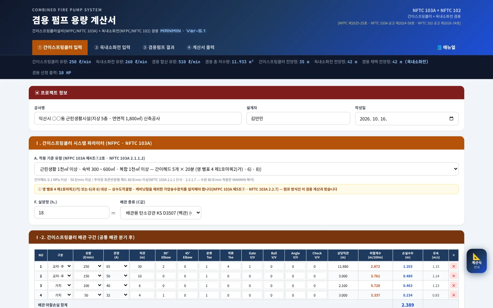
12345- 1작업 탭 · 매뉴얼
- 2요약 바
- 3프로젝트 정보
- 4간이스프링클러 파라미터
- 5계산식 안내
| 영역 | 내용 |
|---|---|
| 헤더 · 탭 | 「① 간이스프링클러 입력」 → 「② 옥내소화전 입력」 → 「③ 겸용펌프 결과」 → 「④ 계산서 출력」, 오른쪽 끝 「📘 매뉴얼」 |
| 요약 바 | 어느 탭에 있든 설비별 유량 · 겸용 토출량 · 총 저수량 · 설비별 전양정 · 채택 전양정 · 선정 출력을 한 줄로 보여 줍니다 |
| 입력 상자 | 프로젝트 → 간이스프링클러 → 옥내소화전(건축물 규모 포함) → 겸용 파라미터 · 공통 배관 — 값을 바꾸면 즉시 다시 계산됩니다 |
| 계산식 안내 | 오른쪽 「📐 계산식」 — 이용방법 · 간이스프링클러 · 옥내소화전 · 겸용 펌프 4개 탭 창 |
1-2. 작업 탭·근거 표시
- 1① 간이스프링클러 입력
- 2② 옥내소화전 입력
- 3③ 겸용펌프 결과
- 4④ 계산서 출력
- 5📘 매뉴얼
- 6근거 · 고시 · 공고
헤더 오른쪽에는 적용 기준 NFTC 103A + NFTC 102와 [NFPC 제2025-25호 · NFTC 103A 공고 제2024-58호 · NFTC 102 공고 제2026-34호]가 표시됩니다.
1-3. 설치·보관·매뉴얼
| 항목 | 내용 |
|---|---|
| 설치 | 브라우저 「홈 화면에 추가」 또는 설치 안내 — 설치하면 오프라인에서도 열립니다(앱 본체만 — 매뉴얼은 온라인 전용) |
| 보관 | 계산 결과는 A4 계산서(인쇄 · PDF · JPG)로 남깁니다. 앱은 입력값을 서버에 저장하지 않습니다 |
| 매뉴얼 | 탭 막대 오른쪽 「📘 매뉴얼」 — 이 문서(HTML)와 PDF(A4) |
021분 따라하기
예제 A — 익산 근린생활시설(지상 5층 · 연면적 1,800㎡)입니다. 근린생활시설 바닥면적 합계 1천㎡ 이상이라 간이헤드 5개 × 20분 대상입니다. 아래 순서대로 넣으면 토출량 510 L/min · 총 저수량 11.933 m³ · 전양정 42 m · 전동기 10 HP가 나옵니다.
- ① 간이스프링클러프로젝트 정보를 넣고 기준 유형 「근린생활 1천㎡ 이상 … 간이헤드 5개 × 20분」 · 실양정 18.0 m · 분기 후 배관 4구간(가지 / 교차·주) → h₂ 2.389 m(3-2).
- ② 옥내소화전「일반 건축물」 · 가장 많은 층 3개(→ 2개 적용) · 실양정 17.0 m · 최저층 방수구 1.5 m · 호스 15 m 고무내장 · 분기 후 배관 3구간 → h₂ 1.145 m(3-3).
- ③ 공통 배관 · 겸용 기준「③ 겸용펌프 결과」에서 합산 · 옥상수조 설치 대상 · 공통 배관 100A 510 L/min 12 m → F₀ 0.665 m(3-4 · 3-5).
- ④ 겸용 결과간이 35 m · 옥내 42 m → 42 m · 250 + 260 = 510 L/min · 10.200 + 옥상 1.733 = 11.933 m³ · 6.983 kW → 10 HP(3-7).
- ⑤ 압력 판정배관 사용압력 0.412 MPa(1.2 MPa 미만 — KS D 3507 가능) · 옥내소화전 최저층 노즐 0.380 MPa(0.7 MPa 이하 — 감압장치 불요)(3-7).
- ⑥ A4 계산서「④ 계산서 출력」에서 「🖨️ 인쇄 · PDF」 또는 「🖼️ JPG 저장」(3-12).
| 항목 | 예제 A |
|---|---|
| 간이스프링클러 | 5 × 50 = 250 L/min · 수원 5 × 50 × 20 ÷ 1,000 = 5.000 m³ · (E 18.0 + F₀ 0.665 + F 2.389 + 10) × 1.1 = 34.159 → 35 m |
| 옥내소화전 | 2 × 130 = 260 L/min · 수원 2 × 2.6 = 5.200 m³ · (E 17.0 + F₀ 0.665 + F 1.145 + 호스 1.800 + 17) × 1.1 = 41.372 → 42 m |
| 겸용 토출량 | 250 + 260 = 510 L/min(NFTC 103A 2.10.2 · NFTC 102 2.9.2) |
| 총 저수량 | 5.000 + 5.200 = 10.200 m³ + 옥상수조(옥내 5.200 ÷ 3) 1.733 → 11.933 m³ |
| 전양정 · 동력 | max(35, 42) = 42 m · 0.163 × 0.510 × 42 × 1.1 ÷ 0.55 = 6.983 kW → 10 HP |
| 압력 판정 | 배관 0.412 MPa(1.2 MPa 미만) · 옥내 최저층 노즐 0.380 MPa(0.7 MPa 이하) · 간이헤드 방수압 상한 규정 없음 |
03화면별 기능 상세
3-1. 프로젝트 정보
- 1공사명
- 2설계자
- 3작성일
공사명 · 설계자 · 작성일은 A4 계산서 머리에 그대로 들어갑니다.
3-2. 간이스프링클러 입력
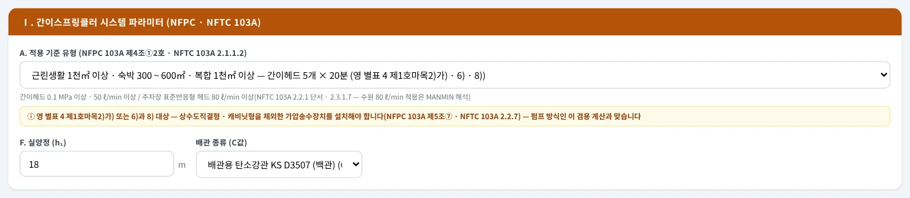
1234- 1A. 기준 유형 — 2개 × 10분 / 5개 × 20분 / 주차장
- 25개 대상 — 상수도직결형 · 캐비닛형 제외
- 3F. 실양정
- 4배관 종류(C값)
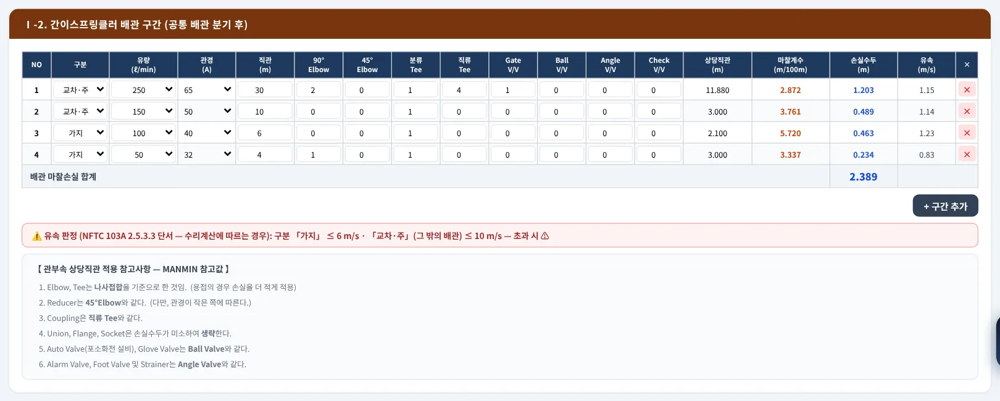
1234- 1구분 — 가지 / 교차·주
- 21구간 — 교차·주 65A 250 L/min
- 34구간 — 가지 32A
- 4＋ 구간 추가
| 항목 | 설명 |
|---|---|
| A. 기준 유형 | 일반 2개 × 10분 · 영 별표 4 제1호마목2)가) 또는 6)과 8) 대상 5개 × 20분 · 주차장 표준반응형 헤드(80 L/min) 2개 · 5개 — NFPC 103A 제4조①2호 · 제5조① · NFTC 103A 2.1.1.2 · 2.2.1 |
| 5개 대상 안내 | 상수도직결형 · 캐비닛형을 제외한 가압송수장치를 설치해야 합니다(NFPC 103A 제5조⑦ · NFTC 103A 2.2.7) — 펌프 방식인 이 계산과 맞습니다 |
| F. 실양정 | 펌프에서 최고층 간이헤드까지 높이 |
| 구간 구분 | 「가지」 6 m/s · 「교차·주」 10 m/s — 수리계산에 따르는 경우(NFTC 103A 2.5.3.3 단서) |
3-3. 옥내소화전 입력
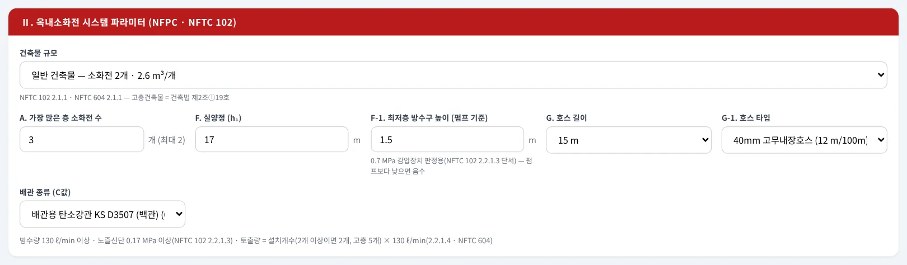
1234567- 1건축물 규모 — 일반 · 고층건축물 · 50층 이상
- 2A. 가장 많은 층 소화전 수
- 3F. 실양정
- 4F-1. 최저층 방수구 높이
- 5G. 호스 길이
- 6G-1. 호스 종류
- 7배관 종류(C값)
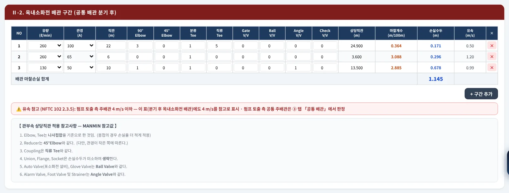
12- 11구간 — 분기 후 100A 260 L/min
- 23구간 — 방수구 50A
| 항목 | 설명 |
|---|---|
| 건축물 규모 | 「일반 건축물」 · 「고층건축물(30층 이상 또는 높이 120 m 이상 · 49층 이하)」 · 「50층 이상」 — 옥내소화전 개수(2 / 5개)와 수원(2.6 / 5.2 / 7.8 m³)이 바뀌고, 고층건축물이면 겸용 펌프 불가 경고(3-10) |
| A. 소화전 수 | 가장 많은 층의 설치개수 — 2개 이상이면 2개(NFTC 102 2.1.1 · 2.2.1.4), 고층건축물 5개(NFTC 604 2.1.1) |
| F. 실양정 · F-1. 최저층 방수구 | 펌프에서 최고층 방수구까지 높이 · 펌프 기준 최저층 방수구 높이(0.7 MPa 감압 판정용, 펌프보다 낮으면 음수) |
| G. 호스 | 15 · 30 m · 호스 종류별 손실률(MANMIN 참고값) — 호스릴은 14 m |
| 배관 구간 | 분기 후 옥내소화전 배관만 입력 — 펌프 토출 측 공통 배관은 ③ 탭에서. 유속은 NFTC 102 2.3.5의 4 m/s를 참고로 표시 |
3-4. 겸용 파라미터
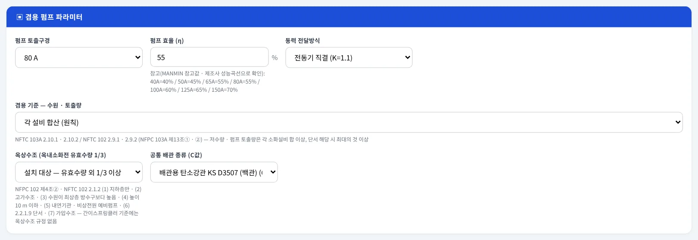
123456- 1펌프 구경
- 2펌프 효율
- 3전달방식
- 4겸용 기준 — 합산 / 방화벽 구획 최대값
- 5옥상수조 — 옥내소화전 유효수량 1/3
- 6공통 배관 종류
| 항목 | 설명 |
|---|---|
| 펌프 구경 · 효율 · 전달방식 | 효율은 직접 입력(구경별 참고값 안내) · 전동기 직결 K 1.1 / 그 밖의 원동기 1.15 — MANMIN 참고값 |
| 겸용 기준 | 「각 설비 합산(원칙)」 / 「최대값 — 고정식 소화설비 2 이상 · 방화벽과 방화문으로 구획 · 각 설비에 지장 없음(단서)」 — NFTC 103A 2.10.1 · 2.10.2 / NFTC 102 2.9.1 · 2.9.2 |
| 옥상수조 | 옥내소화전 유효수량 외 1/3 이상 — 면제 단서 해당 시 「면제」(NFPC 102 제4조② · NFTC 102 2.1.2 · 고층은 NFTC 604 2.1.2의 (2) · (3)만). 간이스프링클러 기준에는 옥상수조 규정이 없어 옥내소화전 유효수량에만 적용합니다 |
| 공통 배관 종류 | 펌프 토출 측 공통 배관의 관 종류 — 1.2 MPa 판정에 포함 |
3-5. 공통 배관
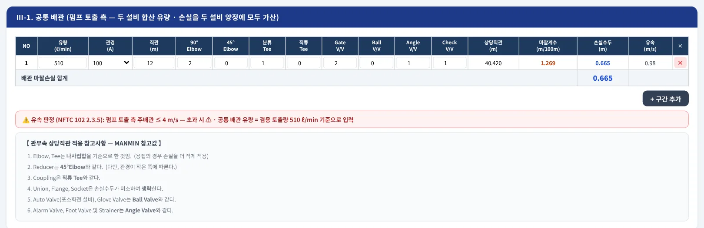
1- 1공통 배관 100A · 510 L/min
펌프에서 두 설비가 갈라지는 지점까지는 간이스프링클러와 옥내소화전 유량이 함께 흐릅니다(예제 A 510 L/min). v5.1.0은 이 구간을 따로 입력받아 손실 F₀(0.665 m)를 두 설비 양정에 모두 더하고, 유속을 NFTC 102 2.3.5(펌프 토출 측 주배관 4 m/s 이하)로 판정합니다(예제 A 0.98 m/s).
3-6. 설비별 결과
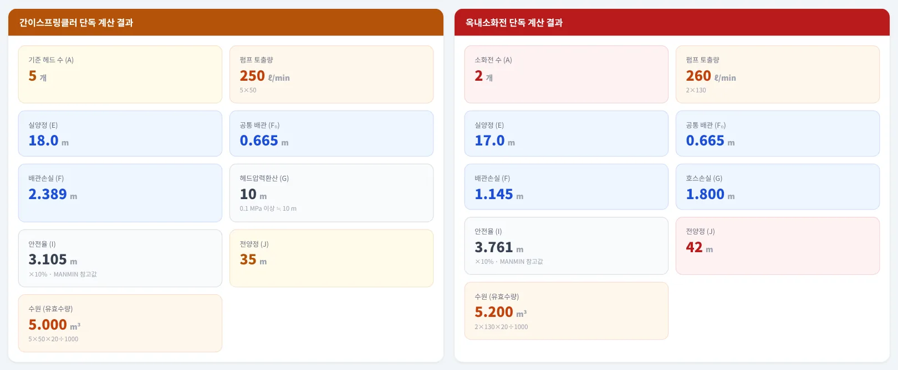
123- 1간이스프링클러 단독 — 전양정 35 m
- 2옥내소화전 단독 — 전양정 42 m
- 3공통 배관 F₀ 가산
각 설비의 토출량 · 실양정 · 공통 배관 F₀ · 분기 후 배관 F · 헤드(호스) · 안전율 · 전양정 · 수원(유효수량)을 카드로 보여 줍니다.
3-7. 겸용 결과 · 압력 판정
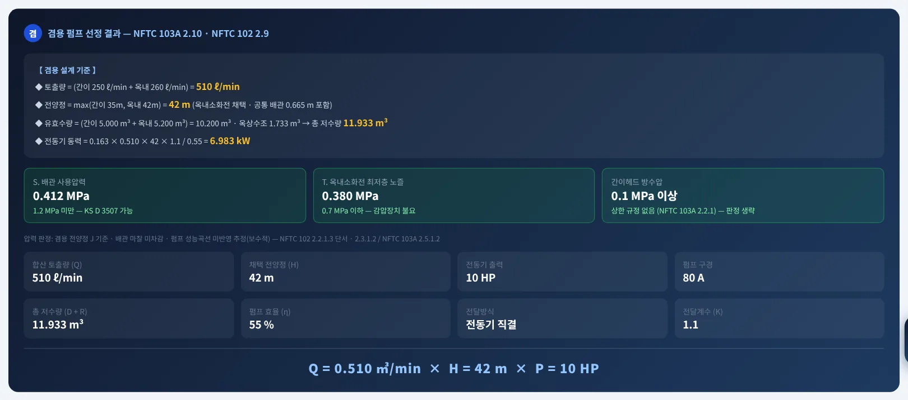
12345- 1겸용 설계 기준
- 2S 배관 사용압력
- 3T 옥내소화전 최저층 노즐
- 4간이헤드 — 상한 규정 없음
- 5펌프 선정 결과
| 항목 | 내용 |
|---|---|
| 토출량 | Q = Q간이 + Q옥내 = 510 L/min (단서 선택 시 max) |
| 전양정 | J = max(J간이 35, J옥내 42) = 42 m — 옥내소화전 기준 채택(MANMIN 적용 — 각 설비 성능에 지장이 없을 것: NFTC 102 2.2.1.5 · NFTC 103A 2.2.2.3) |
| 총 저수량 | D = D간이 + D옥내 = 10.200 m³ + 옥상수조 1.733 m³(옥내 ÷ 3) = 11.933 m³ |
| S. 배관 사용압력 | J × 0.0098 = 0.412 MPa — 1.2 MPa 이상이면 세 배관(간이 · 옥내 · 공통) 모두 KS D 3562 · 3583(NFTC 103A 2.5.1.2 · NFTC 102 2.3.1.2) |
| T. 옥내소화전 최저층 노즐 | (J − 최저층 방수구 높이 − 호스 손실) × 0.0098 = 0.380 MPa — 0.7 MPa 초과 시 감압장치(NFTC 102 2.2.1.3 단서) |
| 간이헤드 방수압 | 0.1 MPa 이상(NFTC 103A 2.2.1) — 상한 규정이 없어 판정하지 않음 |
압력 판정은 배관 마찰을 빼지 않고 펌프 성능곡선을 반영하지 않은 추정(보수적)이며 계산값(토출량 · 양정 · 동력)에는 영향을 주지 않습니다.
3-8. 사례 — 방화벽 구획
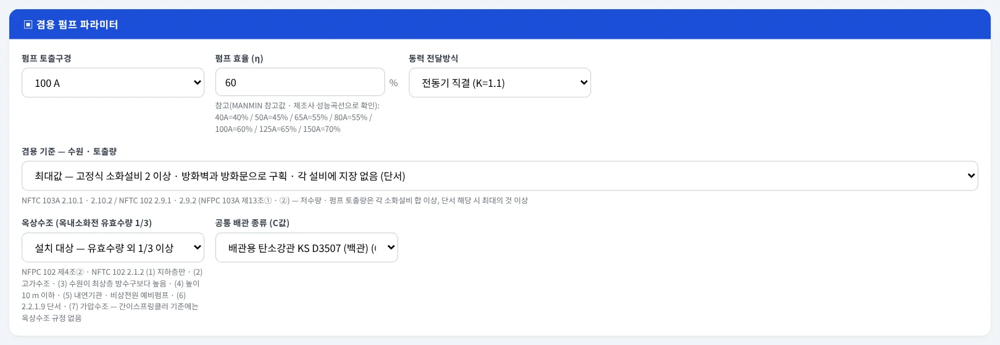
12- 1최대값 — 방화벽 · 방화문 구획
- 2옥상수조 설치 대상
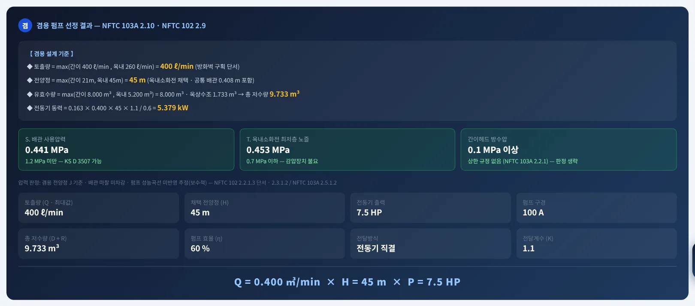
1- 1max(400, 260) · max(8, 5.2) + 1.733
근린생활시설 바닥면적 1천㎡ 이상(영 별표 4 제1호마목2)가) — 모든 층)으로 지하 1층 부설 주차장에는 표준반응형 헤드(80 L/min) 5개 기준을, 지상층에는 옥내소화전 2개(연면적 1,600㎡ — 다목2)가))를 둔 건물입니다. 두 설비가 설치된 부분이 방화벽과 방화문으로 구획되어 각 설비에 지장이 없다는 전제로 「최대값」을 고르면 토출량 max(400, 260) = 400 L/min · 유효수량 max(8.000, 5.200) = 8.000 m³ + 옥상수조 1.733 m³ = 9.733 m³ · 전양정 45 m · 7.5 HP입니다. 옥상수조는 「최대값」을 골라도 옥내소화전 유효수량의 1/3을 따로 둡니다.
3-9. 사례 — 호스릴 · 옥상수조 면제
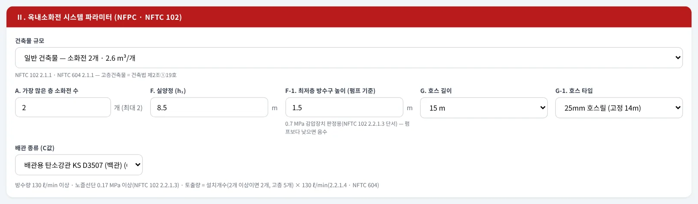
1- 125 mm 호스릴 — 14 m
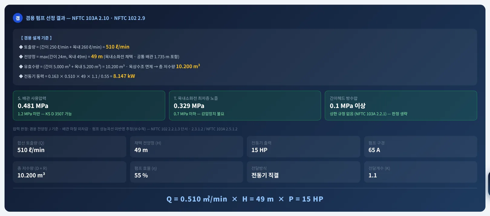
1- 1옥상수조 면제 — 높이 10 m 이하
지하 1층(바닥면적 320㎡ — 옥내소화전 다목2)나)) · 지상 2층 근린생활시설(합계 1,050㎡ — 간이 마목2)가))로 간이헤드 5개 × 20분 대상이며, 옥내소화전은 호스릴(손실 14 m — MANMIN 참고값)입니다. 높이가 10 m 이하라 옥상수조를 면제(NFTC 102 2.1.2 (4))하면 총 저수량 10.200 m³ · 전양정 49 m · 15 HP입니다.
3-10. 고층건축물 경고
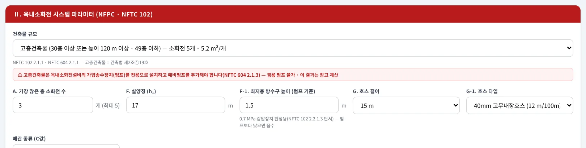
12- 1고층건축물 선택
- 2NFTC 604 2.1.3 — 겸용 펌프 불가
3-11. 계산식 안내 창
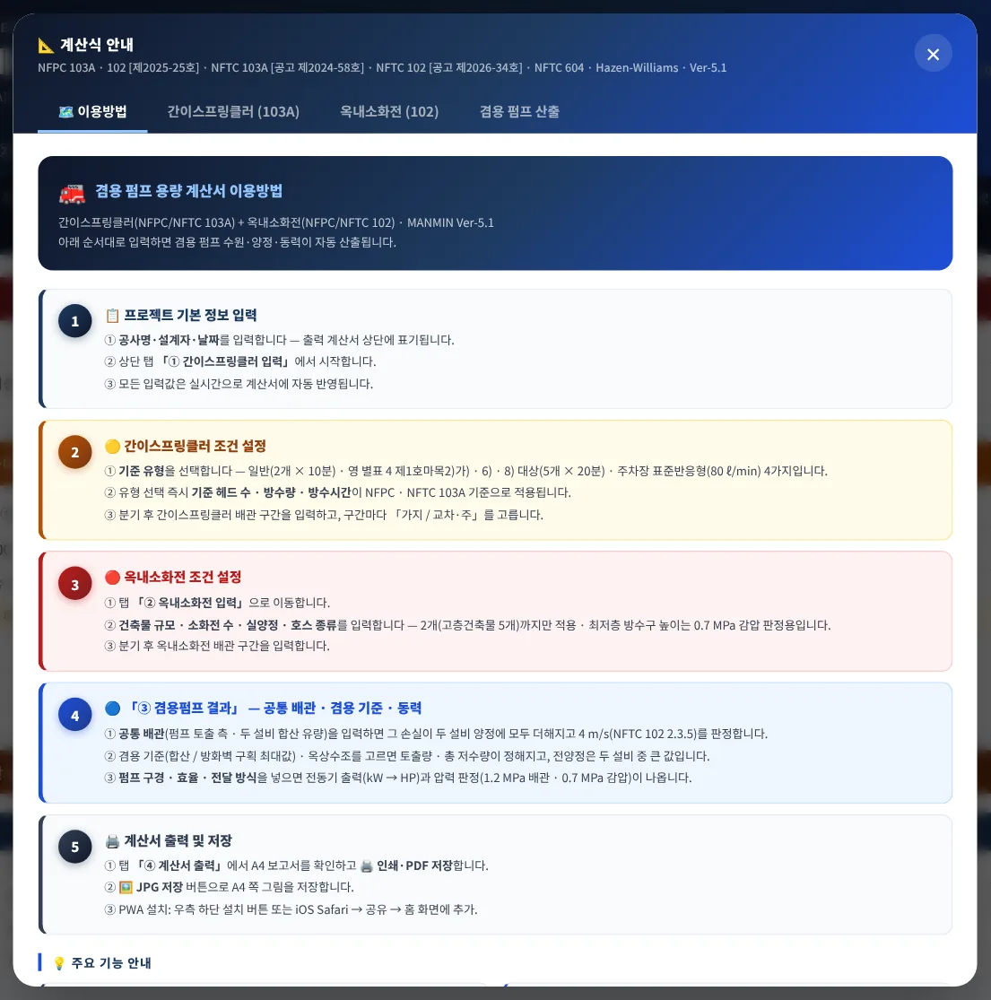
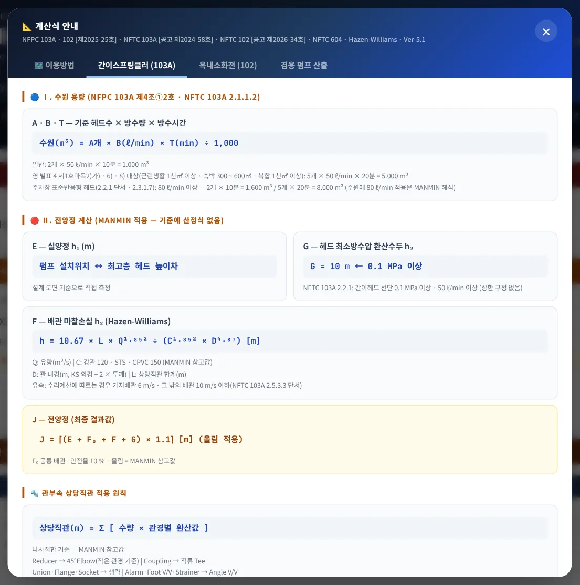
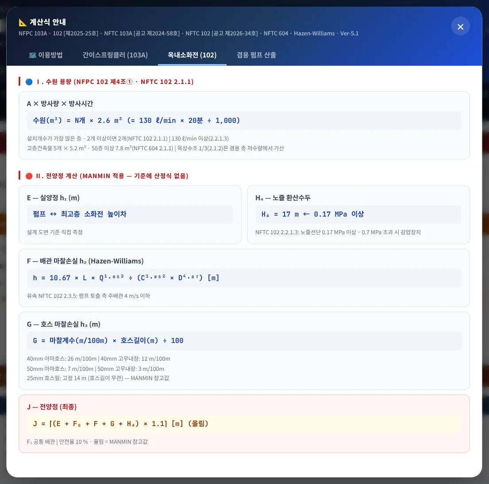
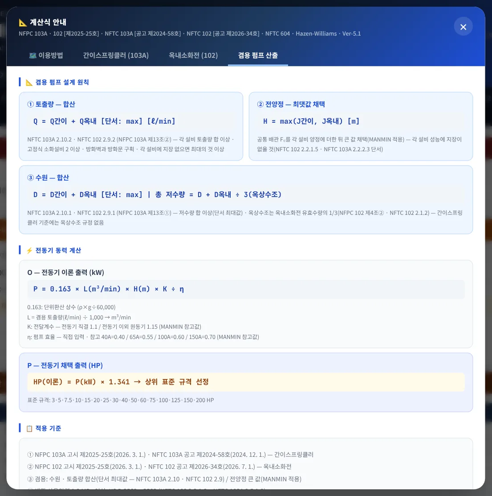
오른쪽 「📐 계산식」은 이용방법 · 간이스프링클러 · 옥내소화전 · 겸용 펌프 4개 탭입니다. 식마다 근거 조문과 MANMIN 참고값 여부를 적어 두었습니다.
3-12. A4 계산서·출력
- 1JPG 저장
- 2인쇄 · PDF
- 3A4 계산서
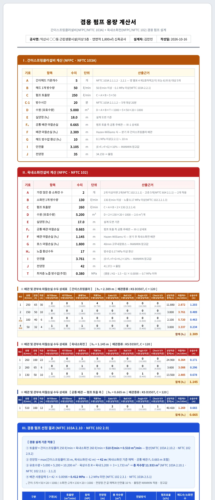
123- 1Ⅰ 간이스프링클러 A ~ J
- 2공통 배관 F₀
- 3Ⅱ 옥내소화전 A ~ T
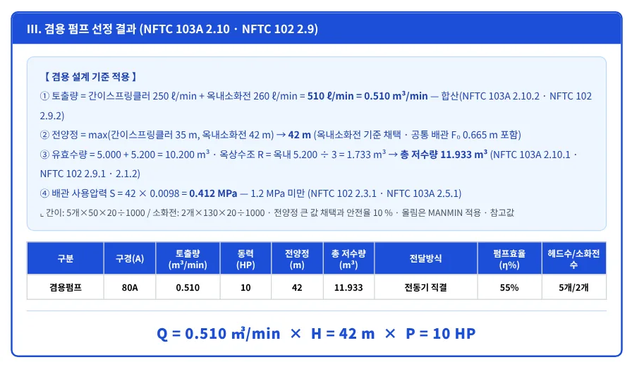
1- 1Ⅲ 겸용 — 토출량 · 전양정 · 총 저수량 · 압력
계산서는 Ⅰ 간이스프링클러(A ~ J) · Ⅱ 옥내소화전(A ~ J · T) · 간이스프링클러 · 옥내소화전 · 공통 배관 마찰손실 상세표 · Ⅲ 겸용 펌프 선정 결과(토출량 · 전양정 · 총 저수량 · 배관 사용압력) · 적용 법령 및 기준 순입니다.
3-13. 휴대전화 화면
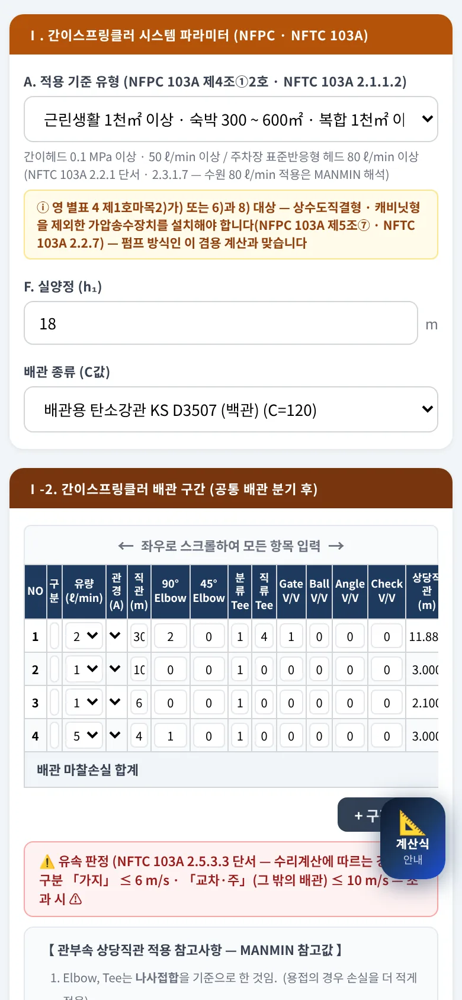
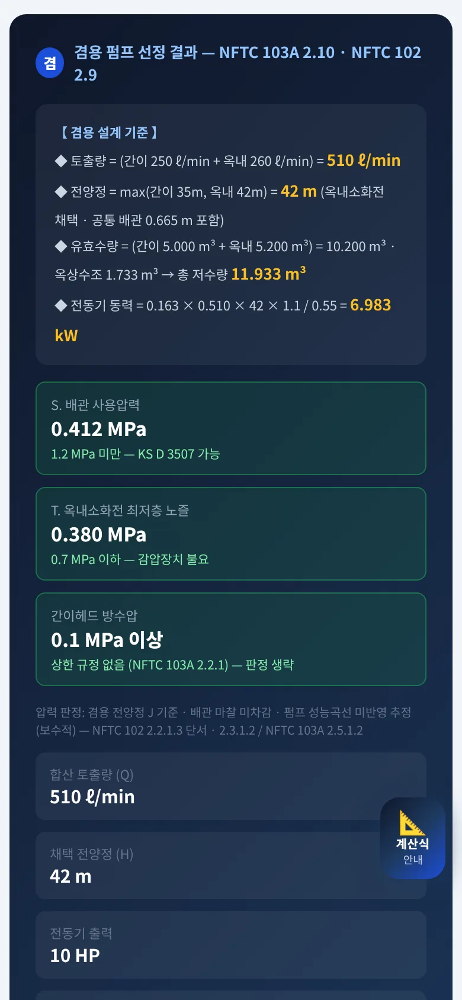
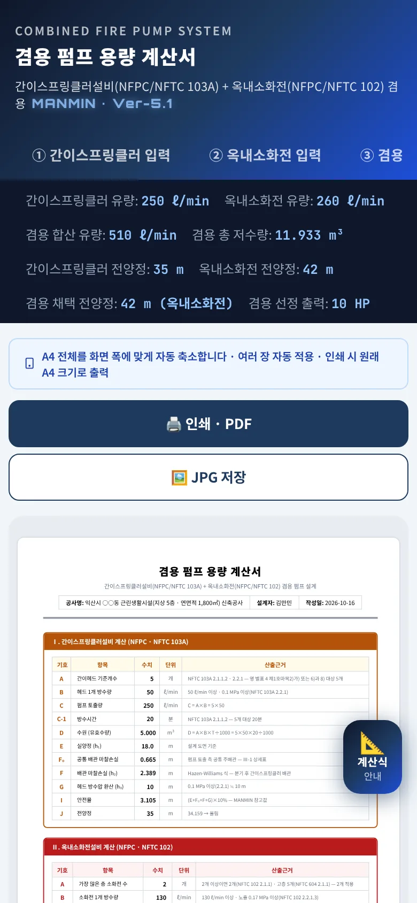
좁은 화면에서는 입력 칸이 쌓이고, 탭 막대는 한 줄로 두고 좌우로 밀어서 봅니다(「📘 매뉴얼」 버튼도 밀어서 보입니다). 배관 구간 표는 좌우로 밀어 입력합니다. A4 계산서는 화면 폭에 맞춰 축소해 보여 주며 인쇄 · JPG는 원본 A4 크기로 나옵니다.
04법령 해설
4-1. 근거 체계
| 기준 | 내용 |
|---|---|
| NFPC 103A · 102 (성능기준 · 고시) | 간이스프링클러설비 · 옥내소화전설비의 화재안전성능기준 — 소방청고시 제2025-25호(타법개정, 2026. 3. 1. 시행) |
| NFTC 103A (기술기준 · 공고) | 2.1 수원 · 2.2 가압송수장치 · 2.3 방호구역 · 2.5 배관 · 2.10 수원 및 가압송수장치의 펌프 등의 겸용 — 국립소방연구원공고 제2024-58호(2024. 12. 1. 시행) |
| NFTC 102 (기술기준 · 공고) | 2.1 수원 · 2.2 가압송수장치 · 2.3 배관 · 2.9 수원 및 가압송수장치의 펌프 등의 겸용 — 국립소방연구원공고 제2026-34호(2026. 7. 1. 시행) |
| NFTC 604 | 고층건축물의 화재안전기술기준 공고 제2023-44호(2.1 옥내소화전설비) |
| 대상 | 간이스프링클러 설치 대상과 5개 · 20분 대상은 「소방시설 설치 및 관리에 관한 법률 시행령」 별표 4 제1호마목 |
LawMCP(국가법령정보센터) 원문 대조 2026-10-16
4-2. 겸용 기준
| 항목 | 기준 |
|---|---|
| 수원(저수량) | 각 소화설비에 필요한 저수량을 합한 양 이상 — 단서: 고정식 소화설비가 2 이상이고 그 부분이 방화벽과 방화문으로 구획되면 각 저수량 중 최대의 것 이상(NFTC 103A 2.10.1 · NFTC 102 2.9.1 · NFPC 103A 제13조①) |
| 펌프 토출량 | 각 소화설비 토출량을 합한 양 이상 — 단서: 고정식 소화설비 2 이상 · 방화벽과 방화문 구획 · 각 소화설비에 지장이 없으면 토출량 중 최대의 것 이상(NFTC 103A 2.10.2 · NFTC 102 2.9.2 · NFPC 103A 제13조②) |
| 펌프 전용 원칙 | 펌프는 전용 — 다른 소화설비와 겸용하는 경우 각각의 성능에 지장이 없으면 예외(NFTC 103A 2.2.2.3 · NFTC 102 2.2.1.5) |
| 수조 유효수량 | 다른 설비와 겸용하는 수조는 각 설비 풋밸브 · 흡수구 사이의 수량을 유효수량으로(NFTC 103A 2.1.3 · NFTC 102 2.1.5) |
| 급수배관 | 옥내소화전 급수배관은 전용 — 기동과 동시에 다른 설비 송수를 차단할 수 있거나 성능에 지장이 없으면 겸용(NFTC 102 2.3.3) |
| 전양정(MANMIN 적용) | 기준에 겸용 양정 식은 없음 — 두 설비 양정 중 큰 값을 채택하고, 옥내소화전 말단은 0.7 MPa로 판정 |
4-3. 수원 · 옥상수조
| 구분 | 기준 |
|---|---|
| 간이스프링클러 | 수조를 쓰는 경우 2개 간이헤드에서 최소 10분 — 영 별표 4 제1호마목2)가) 또는 6)과 8)은 5개 간이헤드에서 최소 20분 이상 방수할 수 있는 양 이상 |
| 옥내소화전 | 가장 많은 층 설치개수(2개 이상이면 2개) × 2.6 m³ · 고층건축물 5개 × 5.2 m³ · 50층 이상 7.8 m³ |
| 옥상수조 | 옥내소화전: 유효수량 외 1/3 이상 — 면제 (1) 지하층만 (2) 고가수조 (3) 수원이 최상층 방수구보다 높음 (4) 높이 10 m 이하 (5) 내연기관 · 비상전원 예비펌프 (6) 2.2.1.9 단서 (7) 가압수조 · 고층건축물은 (2) · (3)만 / 간이스프링클러: 규정 없음 |
4-4. 간이스프링클러 대상 · 방식
| 항목 | 기준 |
|---|---|
| 5개 · 20분 대상 | 영 별표 4 제1호마목2)가) 근린생활시설 바닥면적 합계 1천㎡ 이상 · 6) 숙박시설 바닥면적 합계 300㎡ 이상 600㎡ 미만 · 8) 복합건축물 연면적 1천㎡ 이상 — 앱 기준 유형 「5개 × 20분」 |
| 가압송수장치 | 5개 대상은 상수도직결형 · 캐비닛형을 제외한 가압송수장치(NFPC 103A 제5조⑦ · NFTC 103A 2.2.7) — 펌프 겸용 계산 대상 |
| 주차장 | 부설 주차장 부분은 습식 외의 방식(2.3.1.7) · 표준반응형 헤드 1개 80 L/min 이상(2.2.1 단서) — 수원에 80 L/min 적용은 MANMIN 해석 |
| 방호구역 | 하나의 방호구역 바닥면적 1,000㎡ 이하 · 2개 층에 미치지 않을 것(2.3.1.1 · 2.3.1.3) |
| 주택전용(연립 · 다세대) | 상수도에 직접 연결하는 방식 · 가압송수장치 · 유수검지장치 등을 적용하지 않을 수 있음(NFPC 103A 제14조, 2024. 3. 4. 신설) — 이 겸용 펌프 계산 대상이 아님 |
4-5. 방수압 · 방수량
| 설비 | 기준 |
|---|---|
| 간이스프링클러 | 가장 먼 가지배관에서 2개(5개 대상 5개) 간이헤드 동시 개방 시 헤드 선단 0.1 MPa 이상 · 50 L/min 이상 — 상한 규정 없음(NFTC 103A 2.2.1) |
| 옥내소화전 | 2개(고층 5개) 동시 사용 시 노즐선단 0.17 MPa 이상 · 130 L/min 이상 — 0.7 MPa 초과 시 호스접결구 인입 측 감압장치(NFTC 102 2.2.1.3 · 2.2.1.4) |
4-6. 배관 · 유속
| 항목 | 기준 |
|---|---|
| 배관 재질 | 1.2 MPa 미만: KS D 3507 · 5301(습식) · 3576 · 3595 · 4311 / 1.2 MPa 이상: KS D 3562 · 3583(NFTC 103A 2.5.1 · NFTC 102 2.3.1) |
| 펌프 토출 측 주배관 | 유속 4 m/s 이하 · 가지배관 40 mm(호스릴 25 mm) 이상 · 수직배관 50 mm(32 mm) 이상(NFTC 102 2.3.5) — 앱의 공통 배관 판정 |
| 간이스프링클러 배관 | 수리계산 시 가지배관 6 m/s · 그 밖의 배관 10 m/s 이하(NFTC 103A 2.5.3.3 단서) — 표 2.5.3.3 관경 기준은 앱에서 판정하지 않음 |
4-7. 고층건축물
| 항목 | 기준 |
|---|---|
| 정의 | 「건축법」 제2조제1항제19호 — 층수 30층 이상 또는 높이 120 m 이상 |
| 옥내소화전 수원 | 5개 × 5.2 m³ · 50층 이상 7.8 m³(NFTC 604 2.1.1) · 옥상수조 면제는 (2) · (3)만(2.1.2) |
| 펌프 전용 · 예비펌프 | 옥내소화전설비 전용 + 주펌프와 동등 이상의 예비펌프(2.1.3) — 겸용 펌프 불가 |
| 앱 처리 | 고층건축물 · 50층 이상을 고르면 경고 표시 · 수원 · 양정은 참고 계산 |
4-8. 마찰손실·강관 내경
| 호칭 | KS D 3507 (백관) | KS D 3562 Sch40 (흑관) | STS (참고) | CPVC (참고) |
|---|---|---|---|---|
| 25A | 27.6 | 27.2 | 27.6 | 26.6 |
| 32A | 35.7 | 35.5 | 36.8 | 35.1 |
| 40A | 41.6 | 41.2 | 42.8 | 40.9 |
| 50A | 52.9 | 52.7 | 54.8 | 52.5 |
| 65A | 67.9 | 65.9 | 70.0 | 62.7 |
| 80A | 80.7 | 78.1 | 85.0 | 79.4 |
| 100A | 105.3 | 102.3 | 108.2 | 101.6 |
| 125A | 130.8 | 126.6 | 133.4 | 127.0 |
| 150A | 155.2 | 151.0 | 160.0 | 154.1 |
| 200A | 204.7 | 199.9 | 210.0 | 203.2 |
강관 내경(mm)은 KS 외경 − 2 × 두께로 계산한 값입니다(옥내소화전 · 간이스프링클러 · 겸용(옥내 + 스프링클러) v5.1.0과 같은 표). STS · CPVC 내경은 제품마다 달라 MANMIN 참고값입니다.
4-9. MANMIN 참고값
| 항목 | 내용 |
|---|---|
| 전양정 채택 | 두 설비 양정 중 큰 값 — 기준에 겸용 양정 식 없음 |
| 안전율 · 올림 | (실양정 + 손실 + 방수압 수두) × 1.1 → 올림 — 기준에 펌프 양정 안전율 수치 없음 |
| 주차장 수원 | 표준반응형 헤드 80 L/min을 수원(개수 × 시간)에 적용 — 기준은 방수량만 규정 |
| 호스 · 관부속 | 호스 마찰손실률(40 mm 고무내장 12 m/100 m 등) · 호스릴 14 m · 관부속 상당직관 길이(나사 접합 기준) |
| 전달계수 · 효율 · C값 | K 전동기 직결 1.1 · 그 밖 1.15 · 효율은 사용자 입력 · C 강관 120 · STS · CPVC 150 — 제조사 성능곡선 · 제품 규격으로 확인 |
4-10. v5.1.0 정정 (2026-10-16)
| 항목 | 기존 | 정정 |
|---|---|---|
| 판 번호 | NFTC 103A 「고시 제2025-25호」 · NFTC 102 「2026.03.01. 시행」 | NFTC 103A 공고 제2024-58호(2024. 12. 1.) · NFTC 102 공고 제2026-34호(2026. 7. 1.) · NFPC 103A · 102 고시 제2025-25호(2026. 3. 1.) |
| 조 번호 | 「제5조(수원) · 제6조(가압송수장치)」 | NFPC 102 제4조(수원) · 제5조(가압송수장치) |
| 조항 표기 | 「§2.1.1.4(20분)」 · 「§2.3(전양정)」 · 「§2.3.3.1(안전율)」 | NFTC 102 2.1.1(2.6 m³) · 전양정 · 안전율은 MANMIN 적용 · 참고값 |
| 방수량 · 방수압 | 130 L/min 「고정」 · 「0.17 ~ 0.7 MPa」 | 130 L/min 이상 · 0.7 MPa 초과 시 감압장치(단서) |
| 배관 마찰손실 | 마찰계수(m/m)를 다시 ÷100 — 손실 1/100(기본값 h₂ 옥내 0.019 · 간이 0.008 m) | m/100 m로 정정(기본값 h₂ 옥내 1.404 · 간이 0.829 m) |
| 공통 배관 | 없음 | 펌프 토출 측 Q간이 + Q옥내 구간 · 두 설비 양정에 가산 · 4 m/s |
| 옥상수조 · 단서 | 없음 · 항상 합산 | 옥내소화전 유효수량 1/3 가산 · 면제 · 방화벽 구획 시 최대값 |
| 강관 내경 | KS D 3507 8개 · KS D 3562 9개 오차 | KS 외경 − 2 × 두께 |
| 압력 판정 | 없음 | 1.2 MPa 배관 · 옥내 노즐 0.7 MPa 감압 · 간이헤드 상한 규정 없음 안내 |
| 고층 · 5개 대상 | 없음 | 건축물 규모 선택 · 겸용 펌프 불가 경고(NFTC 604 2.1.3) / 상수도직결형 · 캐비닛형 제외 안내(NFPC 103A 제5조⑦) |
| 기본값 · 엔진 | 소화전 3개 · 390 L/min · 계산이 화면 컴포넌트 안 | 2개 · 260 L/min · cis-engine cisCalc 단일화 — 독립 구현 50,000건 대조 불일치 0 |
05실무 작업 방법
5-1. 단계별 절차
| 단계 | 내용 |
|---|---|
| ① 대상 · 규모 | 간이스프링클러 대상(영 별표 4 제1호마목)과 5개 · 20분 여부 · 고층건축물 여부 — 고층이면 옥내소화전 펌프 전용 |
| ② 설비별 조건 | 간이 기준 유형 · 옥내소화전 개수 · 호스 · 설비별 실양정 · 옥내 최저층 방수구 높이 |
| ③ 배관 경로 | 펌프 → 공통 주배관(분기점까지) → 설비별 배관 · 관부속 수량 · 간이 가지 / 교차·주 구분 |
| ④ 겸용 기준 | 방화벽 · 방화문 구획 여부(단서) · 옥상수조 면제 여부 |
| ⑤ 결과 · 판정 · 기록 | 토출량 · 총 저수량 · 전양정 · HP · 1.2 MPa 배관 · 감압 → A4 계산서를 소방설계도서 · 착공신고 서류에 첨부 |
5-2. 설계 · 승인 전 확인
| 항목 | 확인 |
|---|---|
| 기준 시점 | 건축허가 등 신청일 · 착공신고일에 따라 종전 기준 적용 여부(경과조치) |
| 펌프 선정 | 정격점 · 체절 140 % · 150 % 유량 65 % — 제조사 성능곡선으로 확인(NFPC 103A 제5조②5호 · NFPC 102 제5조①7호) |
| 간이헤드 압력 | 전양정을 옥내소화전 쪽으로 잡으면 간이헤드에 높은 압력이 걸림 — 헤드 사용압력 범위 · 감압 검토 |
| 참고값 | 호스 · 관부속 상당길이 · 효율 · 안전율은 사용 제품 · 사무소 기준으로 바꿔 넣기 |
06문제 해결·FAQ
| 증상 | 해결 |
|---|---|
| 예전 판보다 전양정이 커졌어요 | v5.0은 배관 마찰손실이 1/100로 계산되었습니다. v5.1.0에서 바로잡았고 공통 배관 손실도 더하므로 다시 계산하십시오 |
| 소화전을 3개 넣었는데 2개로 계산돼요 | 가장 많은 층 설치개수가 2개 이상이면 2개로 계산합니다(NFTC 102 2.1.1) — 고층건축물은 5개 |
| 고층건축물 경고가 떠요 | NFTC 604 2.1.3 — 고층건축물은 옥내소화전 펌프를 전용으로 둡니다. 겸용 결과는 참고로만 보십시오 |
| 「최대값」은 언제 쓰나요 | 고정식 소화설비가 2 이상이고 각 설비 부분이 방화벽과 방화문으로 구획되며 각 설비에 지장이 없을 때만입니다 |
| 상수도직결형 · 주택전용도 계산되나요 | 아닙니다 — 이 도구는 펌프 겸용 계산입니다. 상수도직결형 · 캐비닛형은 간이스프링클러설비 계산서(단독)를, 주택전용 간이스프링클러(NFPC 103A 제14조)는 해당 기준을 따르십시오 |
| T가 빨간색이에요 | 해당 펌프 기준 높이 미만 방수구는 감압장치를 검토하십시오 — 계산값은 그대로입니다 |
| 화면이 예전 판이에요 | 새로 고침(Ctrl+F5) 또는 앱을 닫았다 다시 여십시오 |
부록
A1. 예제 입력값
| 예제 | 설비 조건 | 겸용 조건 |
|---|---|---|
| 예제 A | 간이 5개 × 50 L/min × 20분 · 실양정 18 m · 일반 · 옥내 3개 · 실양정 17 m · 호스 40mm 고무내장호스 | 합산 · 옥상수조 설치 · 공통 100A 510 L/min · η 55 % |
| 예제 B | 간이 5개 × 80 L/min × 20분 · 실양정 6 m · 일반 · 옥내 2개 · 실양정 20 m · 호스 40mm 고무내장호스 | 최대값(단서) · 옥상수조 설치 · 공통 100A 400 L/min · η 60 % |
| 예제 C | 간이 5개 × 50 L/min × 20분 · 실양정 8 m · 일반 · 옥내 2개 · 실양정 8.5 m · 호스 25mm 호스릴 | 합산 · 옥상수조 면제 · 공통 80A 510 L/min · η 55 % |
A2. 예제 결과
| 예제 | 간이 J(m) | 옥내 J(m) | 토출량(L/min) | 총 저수량(m³) | 전양정(m) | HP |
|---|---|---|---|---|---|---|
| 예제 A | 35 | 42 | 510 | 11.933 | 42 | 10 |
| 예제 B | 21 | 45 | 400 | 9.733 | 45 | 7.5 |
| 예제 C | 24 | 49 | 510 | 10.200 | 49 | 15 |
| 예제 | F₀(m) | S(MPa) | T(MPa) |
|---|---|---|---|
| 예제 A | 0.665 | 0.412 | 0.380 |
| 예제 B | 0.408 | 0.441 | 0.453 |
| 예제 C | 1.735 | 0.481 | 0.329 |
A3. 버전 변경 내역
| 버전 | 내용 |
|---|---|
| Ver-5.1 · v5.1.0 (2026-10-16) | NFPC 103A · 102 · NFTC 103A · 102 · 604 원문 대조 근거 정정, 배관 마찰손실 ×100 정정, 공통 배관, 옥상수조, 방화벽 구획 단서, KS 강관 내경, 압력 판정, 고층건축물 겸용 불가 경고, 5개 대상 가압송수장치 안내, 계산 엔진 단일화, 「📘 매뉴얼」 · 사용자 매뉴얼(4-10) |
| Ver-5.0 (2026-09) | MANMIN 디자인 통일(헤더 · 탭 · 요약 바 · A4 · JPG 저장), PWA |
A4. 용어
| 용어 | 뜻 |
|---|---|
| 겸용 | 두 소화설비가 수원(수조) · 가압송수장치(펌프)를 함께 쓰는 것 |
| 고정식 소화설비 | 펌프 · 배관과 소화수 또는 소화약제를 최종 방출하는 방출구가 고정된 설비(NFTC 102 2.9.1 · NFTC 103A 2.10.1) |
| 간이헤드 | 폐쇄형 헤드의 일종으로 간이스프링클러설비용 헤드 — 0.1 MPa 이상 · 50 L/min 이상 |
| 공통 배관 | 펌프 토출 측에서 두 설비 배관이 갈라지는 지점까지의 주배관 — 두 설비 유량이 함께 흐름 |
| 고층건축물 | 층수 30층 이상 또는 높이 120 m 이상 건축물(건축법 제2조①19호) |
| 전양정 · 상당직관 | 펌프가 내야 하는 전체 수두 · 관부속 손실을 같은 지름 직관 길이로 바꾼 값 |